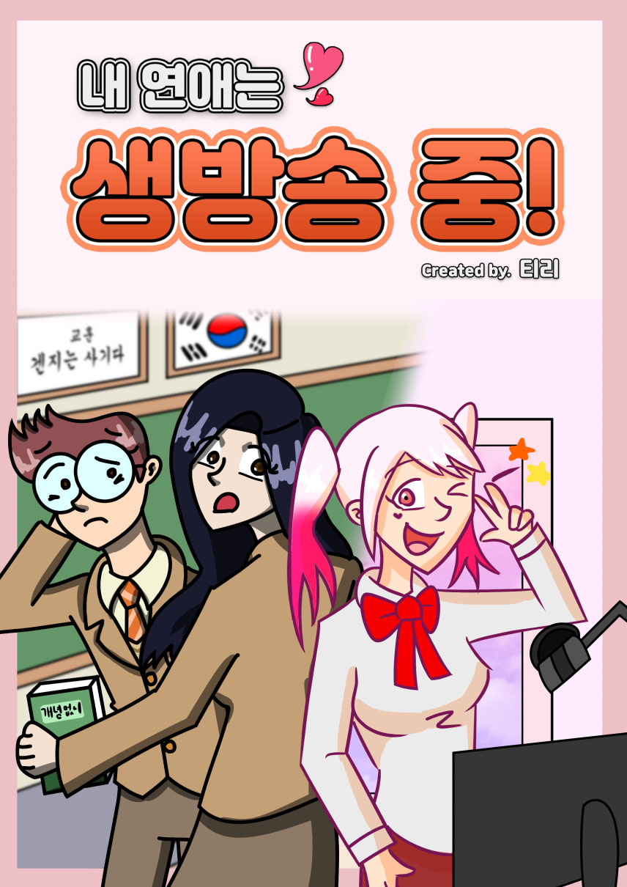

같은 반의 짝사랑하던 모범생 여자애가 알고보니 내가 좋아하는 인기 스트리머였다?! 아싸 남고생 이준탁과 인싸 여고생 스트리머 유하영이 만나면서 일어나는 이야기들
"내 연애는 생방송중!"은 티리 작가가 네이버 도전만화에 연재하는 웹툰입니다.
| 작가 소개 | |
|---|---|
| 닉네임 | 티리 |
| 본명 | 고성민 |
| 출생 | 2001년 9월 25일 (20세) |
| 본관 | 제주 고씨 |
| 학력 | 세명컴퓨터고등학교 졸업 |
| 명지전문대학교 재학중 | |
| 대표작 | 시공4컷 |
| 난투4컷 | |
| 내 연애는 생방송중! | |
| 링크 | |
"내 연애는 생방송중!"은 티리 작가가 네이버 도전만화에 연재하는 웹툰입니다.
| 작가 소개 | |
|---|---|
| 닉네임 | 티리 |
| 본명 | 고성민 |
| 출생 | 2001년 9월 25일 (20세) |
| 본관 | 제주 고씨 |
| 학력 | 세명컴퓨터고등학교 졸업 |
| 명지전문대학교 재학중 | |
| 대표작 | 시공4컷 |
| 난투4컷 | |
| 내 연애는 생방송중! | |
| 링크 | |
| 내 연애는 생방송중! | |
|---|---|
|  | |
| 장르 | 개그, 로맨스 |
| 작가 | 티리 |
| 연재처 | 네이버 도전만화 |
| 연재 기간 | 2020.04 ~ 연재 중 |
| 연재 주기 | 2~3주에 한 번 |
| 연재처바로가기 | |
“어... 좋아. 마지막으로 한 번만 얘기할게... 내 이름은 이준탁... 내 입으로 직접 말하긴 조금 그렇지만, 우리 반에선 친구도 없고, 존재감도 없고, 심지어 희망조차 먼지 만큼도 없는... 말하자면 아웃사이더인 아이지... 언제나 일진인 강준영이랑.. 여동현에게 괴롭힘을 받는 신세고... 유일한 낙이라고는 노트북으로 올투게더TV에서 인터넷 방송을 보는 거였지... 특히 “시에리”라는 분의 방송을 제일 좋아했어... 이런 내 인생에도 행복할 날이 올 수 있을까... 난 전혀 상상도 못 했지... “그 애”가 나타나기 전까진 말이야...”
“좋아, 마지막으로 한 번만 얘기할게. 내 이름은 유하영. 내 입으로 직접 말하긴 조금 그렇지만, 우리 학교 최고 미녀이자 항상 전교 1등을 놓친 적이 없는 최고 우등생, 항상 모두에게 사랑과 존경을 받는 최고의 모범생이지. 하지만 나에게는 한가지 비밀이 있어. 사실 나는 올투게더TV에서 “시에리”라는 닉네임으로 인터넷 방송을 하고 있어. 주력 컨텐츠는 라디오 방송, 욕설과 수위 높은 드립이 난무하는 매운 방송을 하고 있지. 그렇지만 반 아이들은 아무도 내가 그런 방송을 하고 있는지 몰랐지. “그 애”가 나타나기 전까진 말이야...”
“설마 내 방송을 보는 시청자가 우리 반에 있을 줄은 몰랐지.”
“설마 좋아하던 여자애가 내가 가장 좋아하는 스트리머일 줄은 몰랐지.”
“으아아! 설마 내가 방송하는 게 우리 반 얘한테 들킬 줄이야!!”
“그래서 자기가 방송하는 걸 절대 말하지 말라고 부탁하더라. 하지만...”
“비밀을 지켜주는 대가로 나랑 1일 해달라고? 너 미쳤니 진짜?!”
“가장 좋아하는 스트리머랑 연애하게 된 나에게는, 이제 어떤 일이 일어날까?”
“이건 들켜서는 안 될 비밀을 들킨,”
“하지만 그런 비밀까지 좋아해 줄 수 있는,”
“우리들의 이야기”
남주인공. 18세. 정기고등학교 2학년 1반. 반내 최고의 아웃사이더.
마튜브나 올투게더TV에서 스트리머들의 방송을 보는 것이 인생의 유일한 낙.
어느 날 같은 반 친구인 유하영이 자신이 가장 좋아하던 스트리머 "시에리"
임을 알게된다.
여주인공. 18세. 정기고등학교 2학년 1반 회장이자 인기 많은 모범생 미소녀.
하지만 그녀의 또다른 정체는 올투게더TV에서 방송하는 스트리머 "시에리".
어느 날 같은 반 친구인 이준탁에게 자신이 스트리머라는 것을 들키게 된다.
본 작품의 빌런1. 18세. 정기고등학교 2학년 1반.
항상 이준탁을 때리고 괴롭히는 전형적인 일진.
남몰래 유하영을 짝사랑하고 있다. 유하영은 전혀 눈치를 채지 못했지만...
본 작품의 빌런2. 18세. 정기고등학교 2학년 1반.
강준영의 친구이자 똑같이 이준탁을 괴롭히는 질 나쁜 아이.
무언가 들켜서는 안 될 비밀을 갖고 있는 것 처럼 보인다.